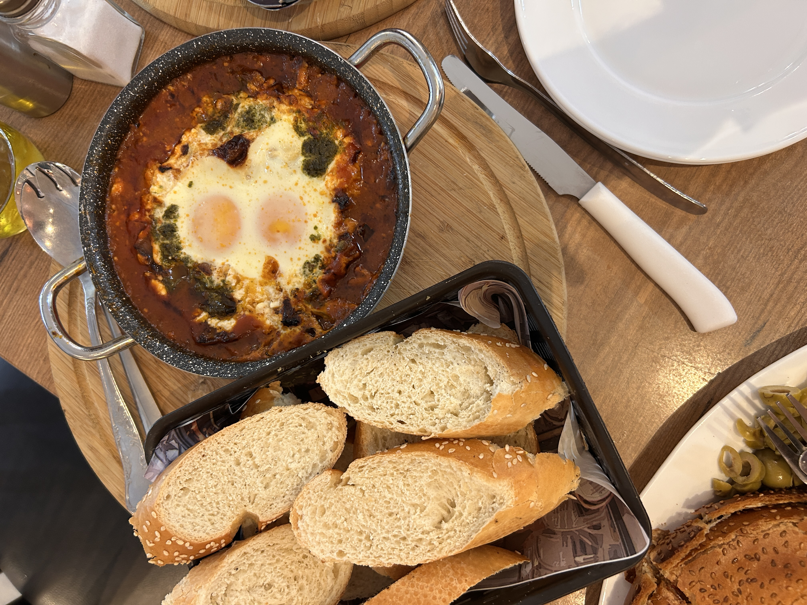
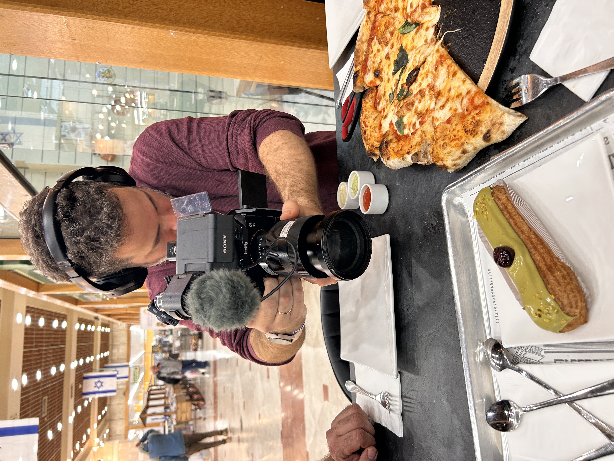

ענבל לקחה אותי לערד. היא מדריכת טיולים וסיורים קולינריים בעיר, ואני מודה, לא תיכננתי להגיע לשם בקרוב. הפעם האחרונה שהייתי בתוך העיר הייתה כשהייתי בן 14, בפסטיבל ערד, ישנתי באיזה חניון עם שק שינה זרוק. מאז העיר השתנתה מאוד — כשליש מהאוכלוסייה היום הם חסידי גור.
שאלתי את ענבל מה זה עושה לעיר. יש נטישה של חילונים, היא אמרה, אבל גם חזרה של צעירים. המלחמה דווקא עשתה שינוי לטובה. צעירים שמתעניינים לחזור למקום שקט, עם מעטפת כלכלית ואפשרות לפתוח עסקים. הבעיות גדולות, אבל כל עוד אני פה, אמרה ענבל, אני אמצא את הדרך.
הגענו ביום הגשום היחידי בשנה אל סטודיו קפה, ברובע האומנים. בית קפה בוטיק קטן שהקימה אנה, שעלתה מארצות הברית לפני שבע שנים. בכוונה לא שמתי אותו במרכז ערד, הסבירה. רציתי שאנשים יבואו בכוונה לחפש מקום אחר, לשבת כמה שעות, לשים את כל הלחץ בצד.

סטודיו קפה
אנה · רובע האומנים · קפה קלוי ביד
אנה ידעה שאם היא רוצה להצליח, היא חייבת קפה טוב. היא טסה לג'ג'ו איילנד בקוריאה ולמדה חודש שלם קלייה של קפה. כל מה שבמקום — עבודת יד. כל המאפים, כל התפריט. אפילו הסינבון, שלוקח יומיים להכין. ויש מקומות ששווה לסטות עבורם מהדרך.
"בכוונה לא שמתי את בית הקפה במרכז ערד. רציתי שאנשים יבואו בכוונה לחפש מקום אחר, לשבת כמה שעות, לשים את כל הלחץ בצד."
— אנה, סטודיו קפה format_quote
הקפה שהגישה לי היה אמריקנו עם שמנת מתוקה — משהו שבחיים לא הייתי מזמין, אבל היא הציעה ואני הסכמתי. המקום קטן ומשרה המון רוגע, הקירות בצבע מדבר, והסינבון הענק שהגיע לשולחן היה באמת חיבוק. ויש פה קטע של חיבוק, אמרה ענבל. חיבוק אמיתי.
"הסינבון הזה — יומיים להכנה, וזה פשוט חיבוק."
— אנה, סטודיו קפהאחרי הקפה, הגיע הזמן לשקשוקה. מסעדת טוקיו נוסדה לפני 46 שנה על ידי אבא של אלכס וסמי, שעלו מארגנטינה. אבא עבד בבתי הזיקוק באשדוד, ביקר את בן הדוד בערד, נדלק על המקום, והשאר היסטוריה. התחילו בגלידה, הוסיפו פיצריה, ארוחות בוקר, פסטות ושקשוקות.
כשנכנסנו, סמי ואלכס קיבלו אותנו בחום. שאלתי אותם איך העיר השתנתה. האוכלוסייה השתנתה, אמר אלכס. הילדים גדלו, עזבו, ההורים בעקבותיהם למרכז. שאלתי אם היו מעדיפים את ערד הישנה. הייתי מעדיף את ערד עם עשר אלף תושבים, הודה אלכס. אוכלוסייה שונה, אווירה אחרת, סגנון אחר.

טוקיו
אלכס וסמי · 46 שנה · שקשוקה צ'ימיצ'ורי
הם הגישו לנו המון — בייגל טוסט משני סוגים, שני סוגי שקשוקות, מטבלים. השקשוקה צ'ימיצ'ורי הפתיעה אותי. שילוב ארגנטינאי במנה ישראלית, מתאים מושלם ליום חורפי. ענבל סיפרה שכילדה סבתא שלה הייתה מגיעה לכאן כל בוקר, קפה ופיצה. המקום השתנה, אבל האוכל לא.
"הייתי מעדיף את ערד עם עשר אלף תושבים. אוכלוסייה שונה, אווירה אחרת, סגנון אחר. אבל הכל השתנה."
— אלכס, טוקיו format_quote
לקינוח טעמנו את הגלידה, ואני מצטער שלא כל הארוחה הייתה עשויה ממנה. פיסטוק קלוי בתנור, ריבת חלב — דולסה דה לצ'ה אמיתי של ארגנטינאים. הפיסטוק נהדר, הריבת חלב — ליגה אחרת. אני יכול להבין למה בסוף סמי רוצה לחזור לגלידה.
נפרדנו מטוקיו והזיכרונות, וצעדנו לעומק העיר. עברנו מעברים שהחזירו אותי 30 שנה לאחור, לפסטיבל ערד ההוא. נכנסנו לקניון, ונדהמתי לגלות שהוא נראה בדיוק כמו שהוא נראה אז. ופתאום הבנתי — מזגן. לזה באנו לקניון בקיץ של 94.
בתוך הקניון, פגשנו את איגל, שפתח פיצריה נפוליטנית לפני חודשיים בלבד. בצק שנח 72 שעות, טאבון אמיתי, הכל מאלף ועד תו. שאלתי אותו למה כאן. כי אני חושב שגם לערד מגיע, אמר. דברים טובים, לא רק לתל אביב. הוא גר בערד עשר שנים, מאוהב בשקט ובמזג האוויר.
אופרה
פיצה נפוליטנית · קניון ערד · חודשיים בלבד
אכלנו מרגריטה. פשוטה, מנחמת, טעימה. חבר שלי אמר לי לא להשתמש במילה מנחם, אמרתי לענבל, כי על כל דבר אני אומר מנחם. אבל זה באמת מנחם. ואיזה כיף שבקניון הזה, המשפחה יכולה לפצל — סושי, קינוח, פיצה — וכולם מרוצים.
"אני חושב שגם לערד מגיע, אתה יודע. דברים טובים. לא רק לתל אביב."
— איגל, אופרה format_quote
יצאנו החוצה. ענבל אמרה שהיא ממשיכה להדריך סיורים, לשווק את ערד, להאמין. ואני מודה — הופתעתי. ערד היא לא מה שזכרתי. יש כאן אנשים שפותחים עסקים מתוך אהבה, קפה מקולה ביד, גלידה שמנצחת כל סופר, ופיצה נפוליטנית בקניון במדבר. שווה לסטות.